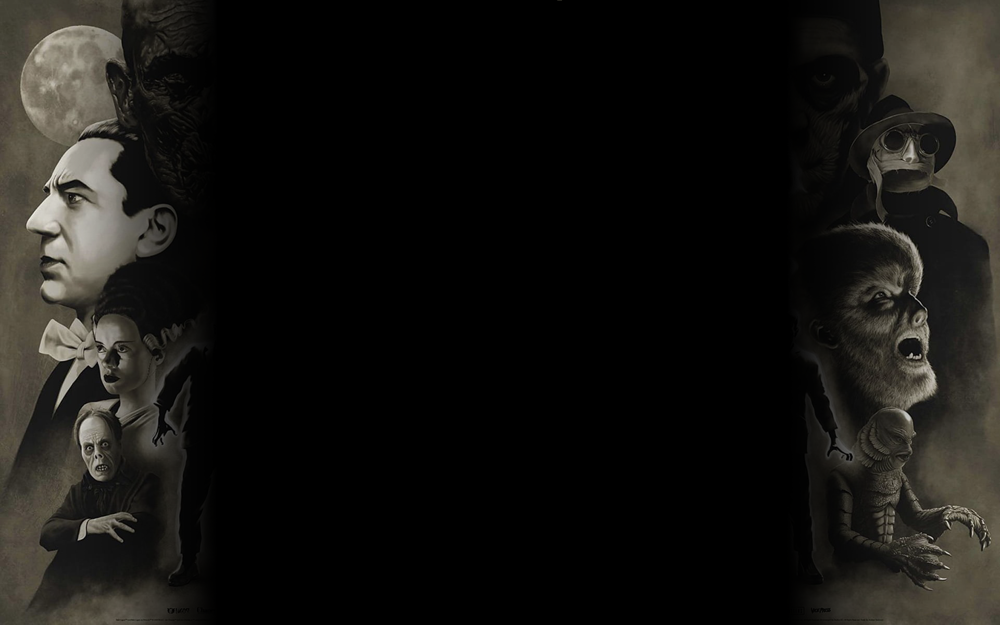
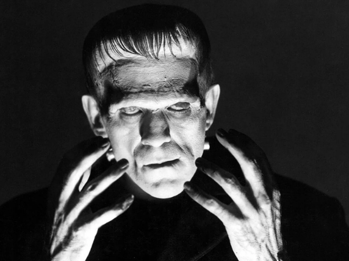

UNIVERSAL HORROR MOVIE MONSTERS
HOME ◉
Passion V2 ◉
RYAN'S HOMEPAGE ◉


Frankenstein's Monster
Created in 1931 by Universal Pictures, the film was well recieved by both critics and audience members and was overall a commerical success. Many new sequel films were made after the success eventually including the bride of frankenstein as well as son of frankenstein as well as bizarre crossovers. I always found frankenstein's monster tragic with how he gets brought into a world just to only get attacked by everyone. Also it's frankenstein's monster, not frankenstein he is the doctor and everyone seems to mix this up.